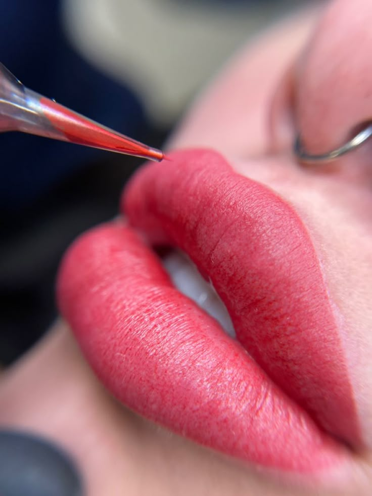
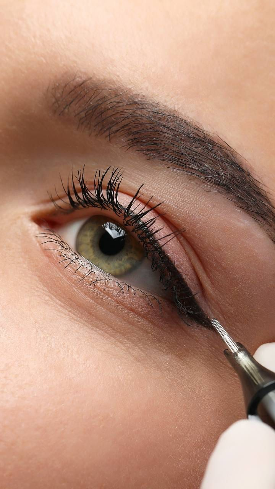
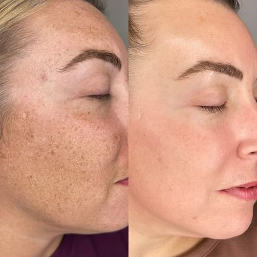

Dudaklarınızın doğal rengini canlandırıyor ve asimetriyi düzeltiyoruz. Her sabah taze ve doğal bir görünümle uyanın.
Silik dudak hattını belirginleştirir ve solgun görünümü ortadan kaldırır.

Kirpik diplerine uygulanan ince dokunuşlarla bakışlarınızı daha net ve buğulu hale getiriyoruz.
Kirpikleri daha yoğun gösterir ve göz yapısını yukarı kaldırır.

Cilt lekelerini veya yara izlerini profesyonel pigmentasyon teknikleriyle kamufle ederek özgüveninizi tazeliyoruz.
Yara izleri, vitiligo kamuflajı ve saçlı deri simülasyonu.
Yüz hatlarınıza en uygun form belirlenir.
Cilt alt tonunuza uygun pigmentler seçilir.
Steril koşullarda profesyonel uygulama yapılır.
1 ay sonra rötuş ile sonuç mükemmelleştirilir.
Cilt tipine göre 1.5 - 3 yıl arası kalıcılık sağlar.
Anestezik kremler sayesinde minimum konfor kaybı.
Alerji yapmayan, ağır metal içermeyen organik boyalar.